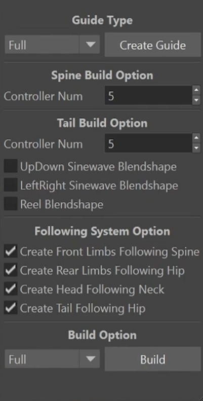

A toolset for building quadruped rigs, reducing repeated manual setup across animals that share a skeletal structure but differ in proportion.

Quadrupeds share a common skeletal logic but vary enormously in proportion, and rebuilding the same spine, limb and foot systems per animal is slow. The toolset generalises the parts that stay constant so that what remains is the per-animal judgement.
PLACEHOLDER — expand this with the specific systems the tool builds and how it handles proportion differences between animals.